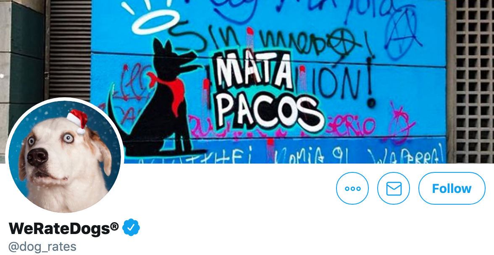

This analysis explores a dataset that contains loan information of 113,937 loans with 81 variables on each loan, including loan amount, borrower rate (or interest rate), current loan status, borrower income, and many others.
This is to answer questions about borrowers employment status, income range, loan amounts and status distributions etc.

In this project, I used Python and its libraries to gather data from variety of sources and in different formats, accessed the quality and tidiness of the gathered data, and then proceed to clean and analyse WeRateDogs dataset gotten from a twitter account that focuses on rating dogs.
I analysed the Cyclistic Bike-share dataset using R and Tableau to design marketing strategies aimed at converting casual riders into annual members using Cyclistic's historical trip data to identify trends.
In this investigation I used exploratory data analysis to answer some questions and make some inferences about the dataset. The tools used in this investigation include but not limited to Python's pandas, matplotlib, numpy and seaborn.